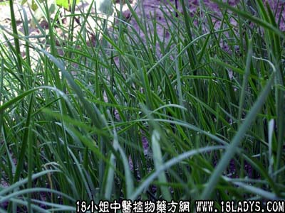

【中药概述】
韭菜子为百合科草本植物韭菜的成熟种子。辛、甘、温。归肝、肾经。
1．补肾壮阳：用于肾阳亏虚之阳痿、腰膝酸软冷痛，跌打损伤等证。可入汤剂中服用。
2．固精缩尿：用于肾阳不足之遗精、尿频，带下淋浊等证。如（<济生方>秘精丸）。
【药效鉴别】
韭菜子与补骨脂功能相近，配伍能增强温肾壮阳作用。阳痿既有举阳不坚，且常早泄，韭菜子兼壮阳涩精之功，为治阳痿早泄良药。
【药理作用】
有性激素样作用。
【化学成分】
主要成分有生物碱、皂甙、蛋白质、脂肪、硫化物、维生素C等。
【用量用法】
本品10——25g，水煎服，或入丸、散剂。
【使用注意】
阴虚火旺者忌。